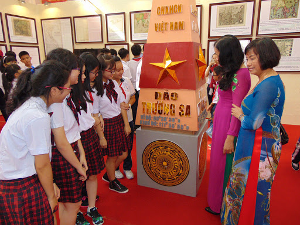

Việc đổi mới phương pháp dạy học Lịch sử theo hướng tiếp cận năng lực là trọng tâm của CT. Môn Lịch sử và cấp tiểu học chú trọng tổ chức các hoạt động dạy học giúp HS tự tìm hiểu, tự khám phá; chú trọng rèn luyện HS biết cách sử dụng SGK, tài liệu học tập, biết cách suy luận để tìm tòi và phát hiện kiến thức mới; tăng cường phối hợp tự học với học tập, thảo luận theo nhóm, đóng vai, làm dự án nghiên cứu.
Tìm hiểu thêmKhóa học phục vụ cho quá trình học tập và nghiên cứu về lịch sử Việt Nam.
Khóa học Lịch sử được thực hiện theo chuỗi video bài giảng online, phù hợp cho tất cả các đối tượng từ cấp tiểu học tới nghiên cứu sinh. Đến với khóa học, các em sẽ được tiếp cận phương pháp học môn lịch sử mới, dễ nhớ, dễ thuộc các sự kiện chính hơn nhờ các điểm đặc biệt chỉ có trong khóa học lịch sử online.
CHƯƠNG TRÌNH TIỂU HỌC

CHƯƠNG TRÌNH TRUNG HỌC CƠ SỞ
Học sinh sẽ được tìm hiểu về các thời kỳ lịch sử của đất nước Việt Nam, được trình bày sống động, phù hợp với từng đối tượng thông qua các công cụ giảng hiện đại. Vì thế, thay vì phải nhớ qua các dòng chữ dài dòng, khó hiểu thì các học qua ghi nhớ hình ảnh luôn hiệu quả và nhớ lâu hơn hẳn. Đồng thời phương pháp học này cũng giúp các em dễ dàng nắm bắt chính xác các trình tự của các mốc thời gian, sự kiện lịch sử và nội dung xảy ra.
Tìm hiểu thêmTRUNG HỌC PHỔ THÔNG
Khóa học Lịch sử lớp 12 được thực hiện theo chuỗi video bài giảng online, giúp các em học sinh cuối cấp dễ dàng theo dõi và học bài hơn. Đến với khóa học, các em sẽ được tiếp cận phương pháp học môn lịch sử mới, dễ nhớ, dễ thuộc các sự kiện chính hơn nhờ 02 điểm đặc biệt chỉ có trong khóa học lịch sử online cho học sinh lớp 12 này.
Tìm hiểu thêmNGHIÊN CỨU ĐỀ TÀI
Triển khai nhiều chương trình, đề án, đề tài nghiên cứu khoa học các cấp. Trong số đó là nhiều đề tài khoa học cấp Nhà nước, như Các giá trị truyền thống và con người Việt Nam hiện nay; Thiết chế chính trị xã hội nông thôn Việt Nam; Tư tưởng đại đoàn kết của Chủ tịch Hồ Chí Minh; Lịch sử Chính phủ Việt Nam; Lịch sử và hiện trạng hệ thống chính trị ở Việt Nam;...
Tìm hiểu thêm.jpg)